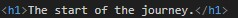
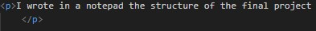
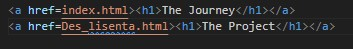
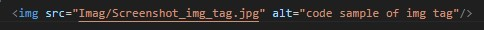
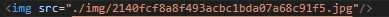

Hello, my name's Alex and i want to finish a very ambitious project. This is a wey for me to keep track of objectives and progress. And to motivate myself....
I wrote in a notepad the structure of the final project made the features i want to implement and the technologies i will be using and what I have to learn. I will post the document. I decided to start with the frontend, i'm following a tutorial and i will be posting what i learned.
So far i learned that HTML stand for Hypertext Markup Language. The heading uses the "h" tag enclosed by "< >" (angle bracket), like all tags and depending on the number that follows after the size of the heading will change. The biggest size is one and the smallest is six.
There is also the "p" tag that is used for paragraphs.

You can also create lists both unordered and ordered,
using "ul" tag for unordered and "ol" for ordered, under the tags you must use another tag "li" which stands for list(i think...) and
contains the elements of the lists.
The anchor tag "a" its used to display links in a page, like this.. PRES HERE!!!
Href is an attribute that gets a value, in our case a URL(Uniform Resource Locator), a very fancy name but on our case its a unique address.
The image tag (img) uses the attribute "src" meaning source of image, where you have to post the URL(address) of the image. It's also a void element which is why it has a self closing tab. Another attribute that it's very important for the image tag is "alt" (alternative text description), with this tag you can write a small description of the image so that people that have visual impediment and use a screen reader and understand what going on.
The file path, sometimes when we want to reach a certain image we have to include like in the image the path, this is the absolute path but we can also use a relative path that uses the symbol "./" and "../". The differences between them is that the relative path is shorter and you can move around the file. The symbol "./" accesses the file in the current directory and "../" goes up to another directory.
This is the information that any hmtl file should start.
!DOCTYPE html
Tells us the version of the html
This is the root of the document, and the lang attribute used to specify the language it's written.
I made a separate page for the project, where i will keep track of the things to implement for the project and the actual project. This page as it is , in its current state is a list inception or as the cultured people like to call nested.